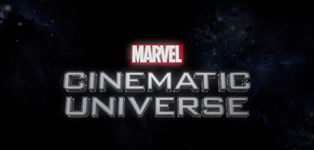

«Кіновсесвіт Marvel» –вигаданий всесвіт, серія супергеройських фільмів, заснована на коміксах компанії Marvel і розроблена компанією Marvel Studios. Всесвіт було створено шляхом з'єднання в загальну сюжетну лінію декількох фільмів з акторами та персонажами. Вже вийшло 27 таких фільмів із з'єднанням сюжету, але різними героями, які іноді перетинаються між собою.Кіновсесвіт Marvel займає перше місце в списку найбільш прибуткових серій фільмів із загальними зборами понад $22,5 млрд, а картини «Месники: Завершення» , «Месники: Війна нескінченності», «Месники» і «Месники: Ера Альтрона» посідають відповідно друге, п'яте, восьме й одинадцяте місця в списку найкасовіших фільмів за всю історію кінематографу.
Нескінченно можна дивитися на три речі – як горить вогонь, тече вода і сперечаються щодо правильної хронології перегляду фільмів кіновсесвіту Marvel. З одного боку, логічно переглядати за роками, тобто появою на екранах, адже після титрів є обов'язкові сцени, які знайомлять глядача з майбутніми фільмами Marvel. З іншого – у нових фільмах та серіалах розповідають про події після якоїсь конкретної битви, яка насправді могла відбутися вже кілька стрічок тому, тобто за цей час минуло вже десяток років і сюжетна хронологія може бути загублена.
Ми ж пропонуємо все ж таки подивитися за сюжетним часовим простором.